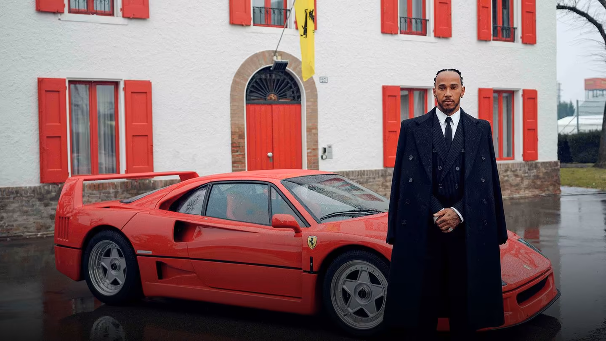

1 Piloto
2 Piloto
.png)
A Scuderia Ferrari é a equipe de Fórmula 1 mais antiga e bem-sucedida da história da categoria. Fundada em 1929 por Enzo Ferrari, ela estreou na F1 em 1950, desde então se tornando uma das equipes mais icônicas e vitoriosas. A Ferrari conquistou 16 campeonatos de construtores e 15 campeonatos de pilotos, com nomes como Juan Manuel Fangio, Alberto Ascari, Niki Lauda, Michael Schumacher e Kimi Räikkönen marcando sua história. A equipe é conhecida por sua paixão, tradição e pela forte base de fãs ao redor do mundo. Com sede em Maranello, na Itália, a Ferrari sempre teve um papel importante no desenvolvimento e inovação técnica dos carros. Apesar de algumas temporadas difíceis ao longo dos anos, a equipe segue sendo um dos pilares da Fórmula 1, com uma intensa rivalidade com equipes como McLaren e Red Bull. Seu carro, tradicionalmente vermelho, é um dos maiores símbolos do automobilismo mundial, e a equipe continua buscando novos títulos e inovações para manter sua liderança na categoria.